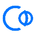

EMPLOYMENT HISTORY
Software Engineer
Deutsche Bank AG, Berlin
Deutsche Bank AG is among the largest banks globally, headquartered in
Frankfurt, Germany. With operations spanning over 70 countries and employing tens of thousands
of individuals, it offers a wide range of financial services, including investment banking,
asset management, and corporate banking, serving clients worldwide
03.2023 - present
- Planned, developed, and implemented test projects, enhancing the core testing framework
- Stability increased from 80% to 90%
- Test coverage improved from 400 ent-to-end tests to 600
- Enabled the deployment of two new applications to production, which speed up trading processes
Stack:
Java
Groovy
Cucumber
Maven
BitBucket
Jenkins
Oracle SQL
Jira

Software Engineer
T-Systems (subsidiary of Deutsche Telekom), Saint Petersburg
T-Systems is the largest German and one of the largest IT services and
consulting companies in Europe, part of Deutsche Telekom. Offering digital solutions, cloud
services etc., T-Systems has over 46,000 employees and operates in more
than 20 countries, serving large enterprises and public institutions globally
09.2020 – 11.2022
- Enhanced and extended a robust test framework using Groovy and TestNG
- Migrated the project from SOAP protocol to REST API, simplifying support and increasing scalability
- Refactored existing code, improving stability (from 95% to 97%) and reducing test execution time (from 8 to 6 hours)
- Collaborated with the team to migrate the project to OpenShift, contributing by rewriting the core framework for container interaction
Stack:
Groovy
Gradle
BitBucket
Jenkins
Oracle SQL
IBM MQ
Jira
OpenShift
Manual test engineer (QA Engineer)
T-Systems (subsidiary of Deutsche Telekom), Saint Petersburg
T-Systems is the largest German and one of the largest IT services and
consulting companies in Europe, part of Deutsche Telekom. Offering digital solutions, cloud
services etc., T-Systems has over 46,000 employees and operates in more
than 20 countries, serving large enterprises and public institutions globally
10.2018 – 09.2020
- Conducted manual integration and bilateral testing for new applications, ensuring compatibility with existing business processes and full customer journeys for Deutsche Telekom
- Worked within a Waterfall model, enhanced by Kanban for task management and process flexibility
- Maintained active communication with customers to clarify requirements and ensure successful implementation
Stack:
Xyna
PostgreSQL
GitLab
AppAgile

Manual test engineer (QA Engineer)
Sphera, Moscow
Sphera is a Russian software developer specializing in large, complex
projects. With 30 years of experience, 180 employees, and 350 completed projects, Sphere focuses
on digitizing various aspects of society and business, including smart and safe cities, situational
centers, and comprehensive business security solutions
04.2018 – 10.2018
- Conducted manual testing and provided support for resolving software bugs in the Russian Emergency Call System
- Collaborated closely with developers and analysts to identify, document, and resolve issues, ensuring effective bug fixes
- Improved system reliability and user experience by thoroughly testing new features and updates
- Actively contributed to team meetings, discussing testing strategies and sharing insights to enhance the system further
Stack:
SoapUI
InfluxDB
Wireless engineer
Huawei Technologies, Moscow
Huawei is a leading global provider of information and communications
technology (ICT) infrastructure and smart devices. Headquartered in Shenzhen, China, Huawei
operates in over 170 countries, employing more than 194,000 people. The company specializes
in telecommunications, enterprise networking, and consumer electronics, driving innovation
and connectivity worldwide
02.2015 – 10.2016
Planning and designing network infrastructure for optimal coverage and
performance, conducting equipment installation, configuration, and integration, testing and
optimizing network performance, project management to coordinate teams and stakeholders, providing
technical support to network operators, ensuring compliance with industry standards, and monitoring
and analyzing network data for problem-solving and strategy development
Technical Design Engineer
Huawei Technologies, Saint Petersburg
Huawei is a leading global provider of information and communications
technology (ICT) infrastructure and smart devices. Headquartered in Shenzhen, China, Huawei
operates in over 170 countries, employing more than 194,000 people. The company specializes
in telecommunications, enterprise networking, and consumer electronics, driving innovation
and connectivity worldwide
10.2016 – 04.2018
- Planned and designed network infrastructure for optimal coverage and performance
- Managed equipment installation, configuration, and integration while optimizing performance
- Provided technical support, coordinated teams, and ensured compliance with industry standards
Technical Design Engineer
RADION, Saint Petersburg, Khabarovsk
RADION was a company specializing in the construction of optical cables
in Saint Petersburg, providing B2B solutions. It also undertook communication infrastructure
projects in various cities, including Khabarovsk. With around 50 employees, RADION played a
key role in telecommunications development before its liquidation
09.2013 – 02.2015
- Project designing for FOCL and mobile network